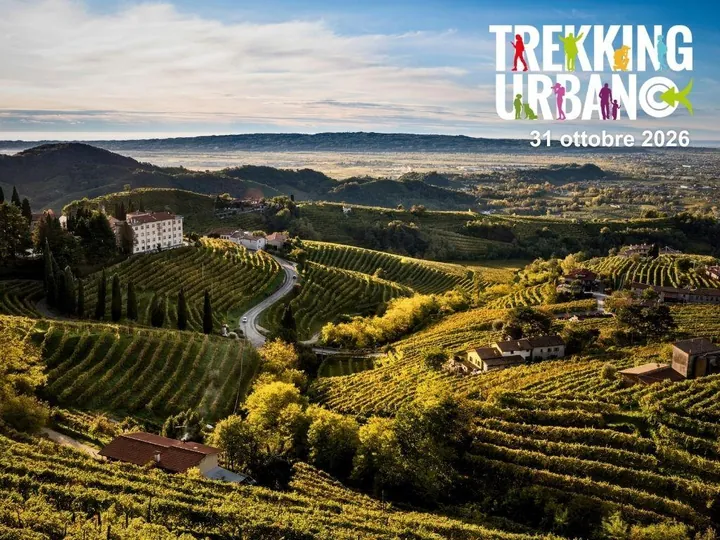

sab 31 ott
Trekking Urbano
La XXIII Giornata Nazionale del Trekking Urbano invita a scoprire città e borghi con il passo lento, unendo cultura, paesaggio e movimento. Per l’edizione 2026 il filo conduttore è “San Francesco 1226–2026: sulle tracce dell’essenziale” , un invito a rileggere il suo messaggio…
 Indicazioni
Indicazioni
- Costi e prenotazioni
- Costo non indicato · Prenotazione non indicata
- Programma
- Programma da verificare. Apri la fonte ufficiale per orari e possibili aggiornamenti.
- In caso di maltempo
- Nessuna indicazione specifica pubblicata.
- Note
- Acquisito automaticamente dalla fonte.
L’EVENTO
Descrizione completa
La XXIII Giornata Nazionale del Trekking Urbano invita a scoprire città e borghi con il passo lento, unendo cultura, paesaggio e movimento. Per l’edizione 2026 il filo conduttore è “San Francesco 1226–2026: sulle tracce dell’essenziale” , un invito a rileggere il suo messaggio attraverso il cammino e il rapporto con la natura e la comunità. Il percorso prenderà avvio da San Pietro di Barbozza di Valdobbiadene , attraversando alcuni tratti dell’Anello del Prosecco Superiore tra vigneti, strade rurali e scorci panoramici sulle Colline del Prosecco di Conegliano Valdobbiadene. Un paesaggio in cui natura e lavoro dell’uomo si incontrano e raccontano ancora oggi il profondo legame tra la comunità e la propria terra. Seguendo il ritmo dei passi e lasciando spazio ai suoni della natura, il cammino raggiungerà l’Eremo di Sant’Alberto , antico luogo di culto e di pellegrinaggio, conosciuto nel corso dei secoli anche come luogo di ritiro spirituale di diversi eremiti dediti alla scelta di una vita raccolta e lontana dal superfluo. La sosta a Sant’Alberto diventerà così un momento particolarmente significativo del percorso: un’occasione per riflettere sul valore del silenzio, della solitudine e della semplicità, richiamando il messaggio di San Francesco e il suo rapporto con il Creato. Da qui si proseguirà verso il Convento dell’Immacolata di Lourdes , presenza francescana a San Pietro di Barbozza, dove vivono i Frati Minori Conventuali. Un luogo che richiama concretamente la figura di San Francesco, in continuità con il tema dell’essenzialità, della semplicità e del rapporto con il Creato che accompagna il trekking. Il percorso continuerà poi verso la zona del Cartizze , un paesaggio unico, modellato nei secoli dal lavoro dell’uomo e dal rapporto con la natura, che insieme alle altre colline del territorio costituisce il paesaggio culturale riconosciuto Patrimonio Mondiale UNESCO. Da qui si riprenderà il cammino verso il centro di San Pietro di Barbozza, dove il trekking si concluderà tornando al punto di partenza. Un’esperienza per riscoprire, attraverso il passo lento, il silenzio e il paesaggio, la bellezza delle cose semplici e il valore di ciò che davvero conta.
IL PROGRAMMA
Programma e orari
Appuntamenti raccolti dalle fonti elencate. Dove manca un orario, non è ancora disponibile in questa scheda.
Programma pubblicato
- 2026-10-31 — 2026-10-31 · 14:30:00
INFORMAZIONI UTILI
Prima di partire
- Controllare la fonte prima di partire.
ORGANIZZAZIONE